转载请注明出处：葡萄城官网，葡萄城为开发者提供专业的开发工具、解决方案和服务，赋能开发者。
原文出处：https://blog.bitsrc.io/do-your-buttons-lead-or-mislead-your-users-d5d83531238b
按钮是UI/UX最关键的组件之一，在不同设备及平台上得到了广泛的应用。它们具有影响用户行为和体验的能力。假如按钮设计不合理，会令用户产生误解及障碍。按钮设计的目的是引导用户完成我们在交互系统中预置的用户流程得以完成，但糟糕的按钮设计则可能会是你丢失你的用户。那么，现在是时候来研究该如何设计你的按钮了！所以今天我们不聊开发相关的知识，我们来看看这个在界面中小小并且重要的元素它的设计思路是怎样的吧。
当用户同时看到好几个按钮，并且按钮的意义没有清晰地表述给用户，用户就会被你的“按钮阵”所误导，从而达不到预期的效果。所以具有清晰而合理的按钮层次结构，能促进用户能够直观、即时地分辨出你设计按钮的作用是什么。下面我们来看看影响按钮层次结构的3个方面：
我们先来介绍一下常用的4种类型按钮：
l 立体按钮：一个具有立体效果的按钮，使它引人注目。
l 平面按钮：没有任何花哨效果的常规平面按钮。
l 幽灵按钮：就像它的名字一样，幽灵按钮通常是透明的(没有背景色填充，和背景是融为一体的)，唯一的区别是这个按钮有一个边框勾勒出按钮的轮廓。
l 文本按钮：仅由文本组成的按钮
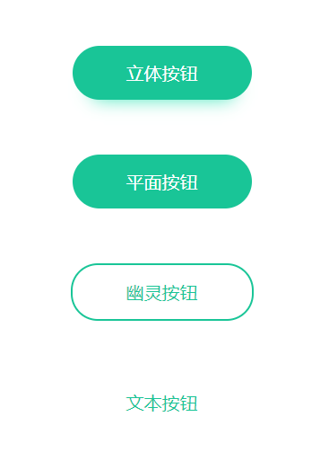
一般，这几种按钮类型在同一界面中可以以下顺序确定视觉上的主次程度：
立体按钮 > 平面按钮 > 幽灵按钮 > 文本按钮
选择哪种按钮的核心在于根据不同厂家和用户需求来确定类型，以便能够更好的引导用户。例如：
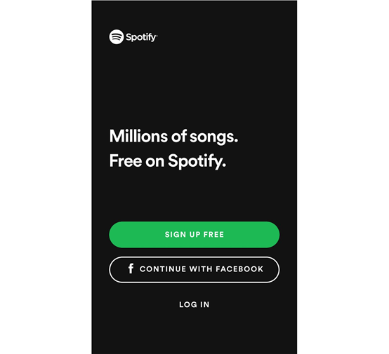
使用立体按钮或平面按钮突出显示主按钮，次要按钮则尽量使用幽灵按钮或文本按钮以突出页面中不同的层次结构。上图中的“免费注册”是主要按钮，因为引导用户注册是这个页面最重要的任务。
一般外观类似的按钮可以看作是同一层次的按钮，这是因为具有类似视觉特征的元素会被认为更相关。以不同的按钮类型实现不同功能，以降低用户的理解成本，才不会误导用户，例如：
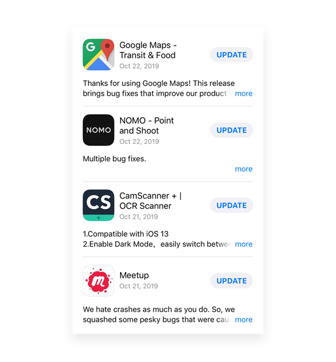
如上图，右侧的“UPDATE”按钮和“more”按钮具有不同的视觉特征，用户能够很好的将它们区分开。
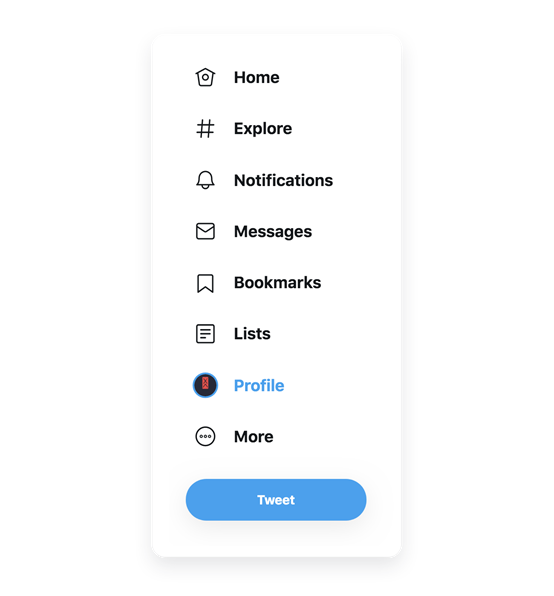
显然，从“Home”按钮到“More”按钮的视觉类型是相同的，处于相同的层级，“Tweet”按钮属于更高层级中的类型。
彼此紧密排列的元素往往更相关。邻近有助于你能进一步组织相似的按钮从而为用户带来相同的功能。所以邻近的重要性就像单词之间的空格和段落之间的回车一样重要。正确运用这一原则，对引导用户产生积极的影响。
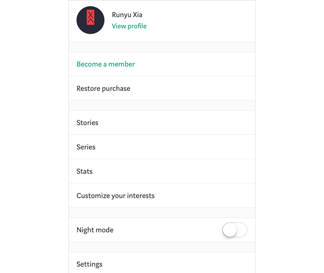
在按钮之间添加空行以将其分为几种类型。放在一起的按钮会让人从视觉上就任务具有类似的功能。
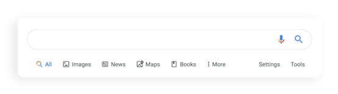
“More”按钮和“Settings”按钮之间的空格巧妙的将按钮分为了两组，这表明从“All”到“More”是搜索结果的分类，而“Settings”和“Tools”按钮具有其他的作用。
首先，正如《Don’t make me think》一书中提到的，用户永远不会在我们网站上通过“阅读”了解内容，他们则是通过“扫视”来了解的。
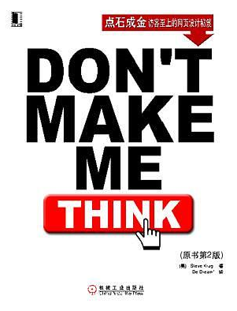
如果他们错过了我们期望他们按下的按钮，我们就会错失让用户成为潜在客户的商机。所以，把按钮做的足够醒目，从而牢牢抓住用户的眼球是至关重要的！
要做到这一点，通过对比来突出按钮往往是很有效的方法。无论你在什么情况下使用哪种按钮类型，只要做到以下3点，就能使你的按钮最先被用户“捕获”：
负空间是摄影中常见的一种技巧，它通过画面中大量的留白，通过强烈的对比度来达到突出主体的目的，这个技法在网页设计中也常被用到。
尺寸是产生对比度的最有效元素之一。大尺寸的按钮始终可以吸引用户的注意力。首先在按钮周围留出足够的负空间，以突出按钮，同时把调整按钮的大小调整到用户足以在界面上很容易关注到它们。
通过为按钮设置负空间和尺寸，为按钮添加颜色可以进一步增强对比度。如果可以的话，你可以在调色板中选择一个足够醒目的颜色，以使用户能下意识的点击。
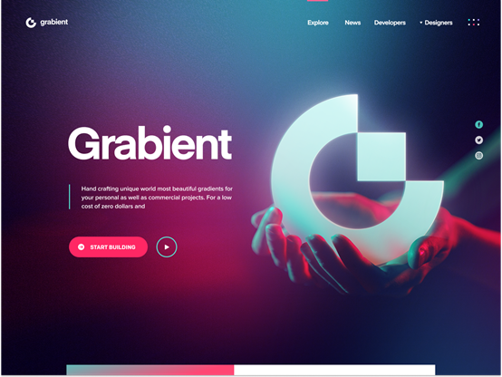
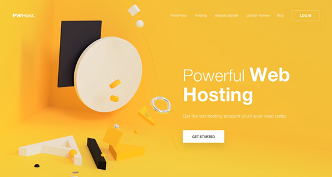
把每个按钮的作用向用户传达准确是至关重要的。如果按钮的功能显示不清晰，则会引起用户的反感，因为他们不想去猜和承担测试按钮点击后的后果。所以为了更好帮助用户理解按钮，以下三种元素可以解决你的问题：文字，图标和标签。
按钮上的文字简明扼要，有助于用户高效获取信息，确保友好的用户体验。
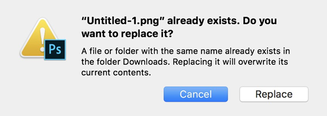
如上图，对于同一问题，不同用户可能会对“是”和“不是”有不同的判断。在选项中使用适当的描述，而不是单纯的“是”和“否”，能确保用户避免误解获得更好的用户体验。
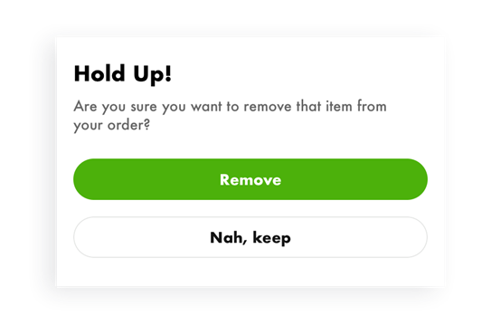
再例如上图，不用“是”和“否”， “移除”选项就足够的清晰明了。
图标是一种常见的UI元素，它简洁而清晰地以可视化的形式呈现按钮功能。用户可以一目了然地分辨出各种按钮的用途。
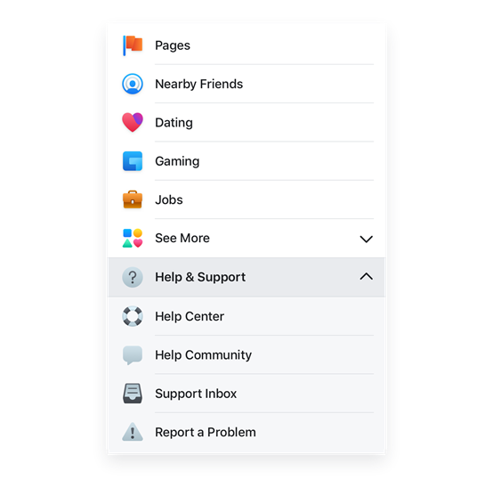
对于具有特定或复杂功能的按钮，需要给按钮设置上标签，以简要说明其功能。显示方式为，当光标悬停在按钮上时出现。
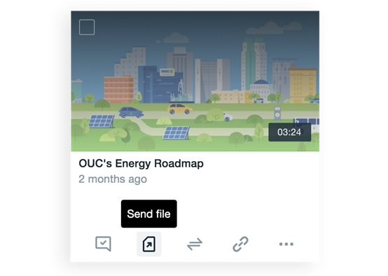
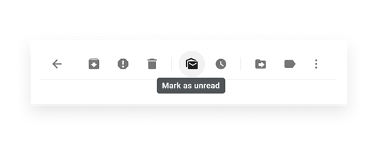
按钮在任何交互系统中都是至关重要的。因此，按钮的设计的好坏直接影响用户的体验和操作的，为能正确引导我们的用户，我们可以：
l 按钮的设计富有层次
l 让按钮在页面中再醒目一点
l 不要让用户去猜按钮的用途
在各种场景下都应该要精心为用户设计按钮，让用户找到自己需要的按钮，直观地做出选择。
那么，希望这篇文章能有所帮助。请随意分享这篇文章。